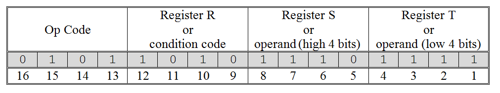
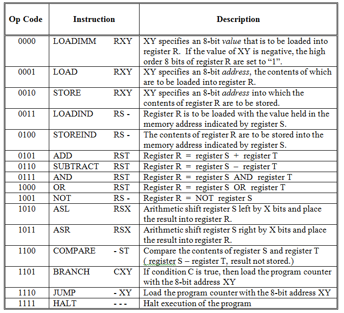
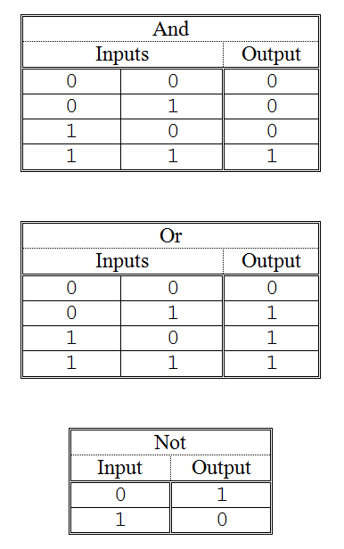
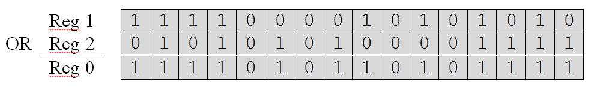
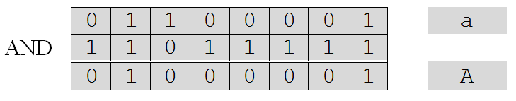
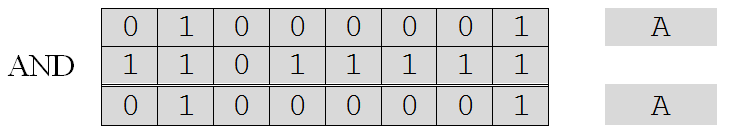
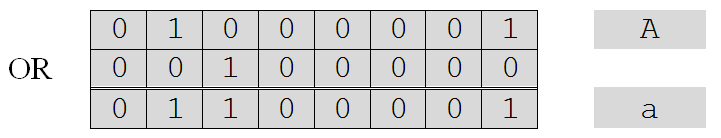
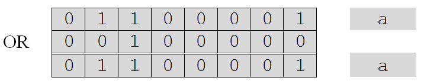
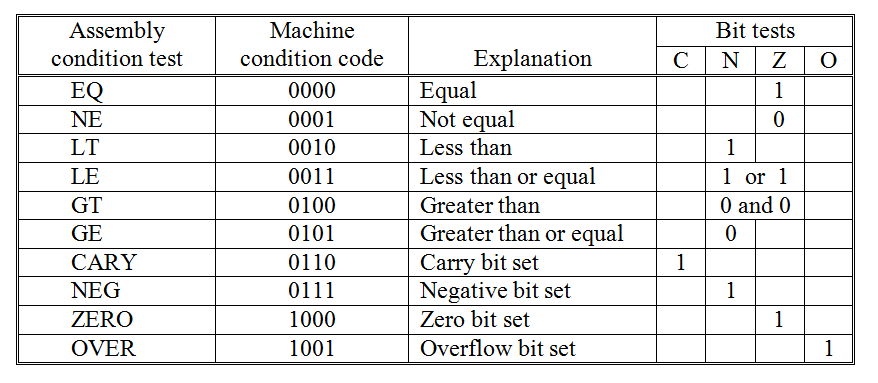

The general format of Watson VM language instructions is given in . The leftmost four bits of the sixteen-bit instruction (bits 13-16) contain the operation code. Each instruction recognized by the machine has a unique operation code, or op-code. Since Watson VM op-codes are four bits long, the Watson VM language can consist of at most sixteen different instructions. In fact, the Watson Virtual Machine language contains exactly sixteen instructions.
The format of a Watson Virtual Machine instruction
The Watson Virtual Machine instruction set
Following the four-bit op-code, the final twelve bits of each instruction specify the operands (data) on which the operation is to take place. How these bits are interpreted depends on the particular op-code specified in bits 13-16. However, bits 9-12 generally specify a register number, while bits 1-8 specify either an 8-bit address, an 8-bit value, or two additional registers (one in bits 5-8 and the other in bits 1-4).
illustrates the sixteen instructions that make up the Watson machine language. The op-code, assembly language equivalent, and a description of behavior is presented for each instruction. The general behavior of many of these instructions should already be familiar to you, since each machine language statement has a corresponding Watson assembly language statement and most of these were discussed in . We’ll now fill in some of the low-level details that were omitted earlier.
The op-code for the LOADIMM statement is “0000”. This op-code is followed by a four-bit register designation and an eight-bit two’s complement value. LOADIMM loads the specified register with the specified value. Thus, the machine language statement:
0000 1010 0100 0001
means load register A (1010two) with the value 0100 0001two ( 41sixteen or 65ten ).
Since there are only eight bits available in the LOADIMM statement with which to specify a value, the range of possible values is limited to -27 to 27 –1 ( -128 ten to +127 ten ). However, the register in which the value is to be stored is sixteen bits long, so it is important that the machine load the specified value into the low-order bits of the register. Furthermore, if the value is negative, the high-order eight bits must be set to 1’s. Assuming a positive value, the high-order bits of the register are set to 0’s. Thus, loading “0100 0001” into register A sets the register to “0000 0000 0100 0001”. Loading -65ten (1011 1111two) into register A would set it to “1111 1111 1011 1111”.
The formats of the LOAD and STORE statements are very similar: an op-code, followed by a register, followed by an 8-bit address. The op-code for LOAD is “0001” so the machine language statement
0001 1011 0000 0001
is interpreted to mean copy into register B (1011two) the value held at memory address one (0000 0001two).[7] The op-code for STORE is “0010”, so
0010 1100 0000 0000
copies the current value of register C (1100two) into memory location zero (0000 0000two).
LOADIND and STOREIND also have similar formats. Following the op-code (in bits 13-16) are two register numbers (one in bits 9-12 and one in bits 5-8). Bits 1-4 are unused in these statements and are ignored by the machine. Thus, they can take on any value. For consistency, however, these last four bits are normally set to “0000”.
The op-code for LOADIND is “0011”. So,
0011 1101 1110 0000
specifies that the value located at the address held in register E (1110two) should be placed into register D (1101two). If register E contained “0000 0000 0000 0010”, the value stored at memory location two would be loaded into register D.
Because addresses are only eight bits in length while registers are sixteen bits, the high-order eight bits of the register contents are ignored when determining the address it represents. Hence, if register E held the bit pattern “1111 1111 0000 0010”, the address would still be interpreted as location two. Of course, for clarity, it is best to insure that these high-order bits are set to 0’s.
The op-code for STOREIND is “0100”, so the bit pattern
0100 1101 1110 0000
is interpreted as a command to store the contents of register D (1101two) into the address indicated by register E (1110two). As with LOADIND, the last four bits of the STOREIND instruction are ignored. The high-order eight bits of the contents of the second register, E in this case, are ignored as well. So, if register D held the value ten and register E held the value one hundred, this statement would place a ten (0000 0000 0000 1010two) into memory location one hundred (0110 0100two).
The next two statements listed in are the arithmetic instructions ADD and SUBTRACT. Both of these statements have a similar form: an op-code followed by three registers. The first register (indicated by bits 9-12) will hold the result of the arithmetic operation. The second and third registers (bits 5-8 and 1-4) provide the inputs. Input values are assumed to be in two’s complement binary notation; outputs are generated in this notation as well.
The op-code for addition is “0101” and for subtraction is “0110”. Hence, the statement
0101 0101 0110 0111
will add the contents of register 6 (0110two) and register 7 (0111two) and place the result into register 5 (0101two). Similarly, the statement
0110 0000 0001 0010
will subtract the contents of register 2 (0010two) from register 1 (0001two) and place the result into register 0 (0000two).
The next three Watson machine language instructions implement the logical operations “and”, “or”, and “not”. Because these statements operate on the bit-level, their function was not discussed in . Basically, the “and” operation produces a “1” (meaning “true”) when both its first and second input are “1” – otherwise (when either or both inputs are “0”) it produces a “0”. The “or” operation produces a “1” (“true”) when either its first or second input is “1” – otherwise (when both inputs are “0”) it produces a “0’. The “not” operation simply inverts, or complements, its input bit. Given a “1” it produces “0”. Given a “0” it produces “1”. The behavior of each of these three operators is summarized in .
The logical operators “and”, “or”, and “not”
The op-codes for the AND, OR, and NOT instructions are “0111”, “1000”, and “1001”, respectively. The formats for AND and OR are similar to the formats for the arithmetic instructions: a result register and two input registers follow the op-code. Hence, the instruction
0111 1010 1011 1100
is interpreted to mean: “apply the ‘and’ operator to the contents of registers B (1011two) and C (1100two) with the result being stored in register A(1010two).” Similarly,
1000 0000 0001 0010
means “apply the ‘or’ operator to the contents of registers 1 (0001two) and 2 (0010two) with the result being stored in register 0 (0000two).”
Both AND and OR apply their respective logical operators in a “bitwise” manner. In other words, the bit values in position x of the two inputs are “anded” or “ored” to generate the corresponding bit value in position x of the output. Given the OR instruction above, together with the following values in registers 1 and 2, the result in register 0 would be computed as shown.
To convince yourself that this answer is correct, simply look up the output specified by the “or” table for the given inputs, on a column-by-column basis. For example, the rightmost column of registers 1 and 2 specify a “0” and a “1” which produce a “1” according to the “or” table. Hence, a “1” is placed in the rightmost column of register 0. The other columns are processed similarly.
The NOT instruction is even simpler than AND and OR. After the op-code, two registers are specified: a result register in bits 9-12 and an input register in bits 5-8. Bits 1-4 are unused by this instruction. The NOT instruction
1001 1111 1010 0000
stores into register F (1111two) the complement of the value held in register A (1010two). If register A contained the bit pattern “0000 0000 0000 0000” this instruction would place “1111 1111 1111 1111” into register F. Note that NOT simply applies the “not” table of in a bitwise manner to the contents of the input register to determine the pattern to be stored in the output register.
Now that we understand what the logical operators do, it is important to spend a moment showing how they can be used to solve problems. Here are two examples.
Changing the sign of a two’s complement number involves complementing the bits of the number and then adding one. Since the NOT instruction implements the complement operation, it makes sign conversion very easy.
Upper and lower letters of the alphabet differ by exactly one bit in their ASCII representations. For example, an upper case “A” is “0100 0001” while a lower case “a” is “0110 0001”. Any lower case character can be changed to upper case by simply setting bit six to “0”. Conversely, any upper case character can be converted to lower case by setting bit to “1”.
The AND and OR instructions can be used to change the case of ASCII characters. By “anding” an ASCII character code with the bit pattern “1101 1111”, a lower case character can be converted to its corresponding upper case character. For example:
Note that this procedure does not modify characters that are already in upper case, as can be seen in the following example.
To change a character from upper case to lower case, its ASCII code can be “ored” with the bit pattern “0010 0000”. To illustrate:
If the character is already in lower case, this operation will have no effect on the character.
Returning to our tour of the Watson Virtual Machine instruction set, the next two instructions implement the “shift” operators. Like the logic operators, the shift instructions were not covered at the assembly level in .
The ASL, or “arithmetic shift left”, command uses op-code 1010. The ASR, or “arithmetic shift right”, command uses op-code 1011. The purpose of these commands is to move, or shift, the bit values of a register some number of positions either to the left or to the right. These shifts are called “arithmetic” shifts because they are designed to respect the sign of the number being shifted, when it is interpreted using two’s complement binary notation. The format of both shift commands is an op-code in bits 13-16, a destination register number in bits 9-12, a source register number in bits 5-8, and a four-bit unsigned number in bits 1-4. This number specifies how many positions the bits of the source register are to be shifted in order to produce the value to be stored in the destination register.
Assume a value of four is stored in register F. This value would be represented as the two’s complement number “0000 0000 0000 0100”. Shifting this number one position to the left and storing the result in register 0, via the statement:
1010 0000 1111 0001
will cause register 0 to take on the value “0000 0000 0000 1000” or eight. Shifting the contents of register 0 over one additional position to the left and storing that result in register 1, would cause “0000 0000 0001 0000” or sixteen to be stored into register 1. In fact, for each position that a bit pattern is shifted to the left, the number it represents is doubled. So, shifting a pattern three positions to the left multiples the number by eight (2 ×2 ×2).
Shifting a value to the right has the opposite effect. The number represented by the bit pattern is divided by two for each position to the left it is shifted. Assuming that register F contains the pattern “0000 0000 0000 0100” or four, the statement:
1011 0000 1111 0001
places the bit pattern “0000 0000 0000 0010” or two into register 0.
For negative numbers the same principle applies: shifting left by one position doubles the number, shifting right one position halves it. In order for these semantics to be implemented properly, arithmetic shifts must respect the sign bit. When shifting right, if the sign bit is “1” as in “1000” (-8) then 1’s must be added on the left, giving “1100” (-4) when shifted right once, and “1110” (-2) when shifted left twice. If the sign bit is “0” then 0’s must be added on the left when shifting right.
The last four instructions in the Watson Virtual Machine language are concerned with determining which instruction will be executed next. These commands and their op-codes are:
The HALT command has no operands. It consists solely of the op-code “1111” in bits 13-16. The other 12 bits of the instruction are ignored – but usually set to zero for clarity. When executed, HALT causes the program to terminate.
The JUMP> command consists of the op-code “1110” in the standard location, bits 13-16, and an 8-bit address in bits 1-8. Bits 9-12 are unused, but normally set to zero. The JUMP instruction causes program control to be transferred to the instruction stored at the indicated memory address. For example, the instruction
1110 0000 0010 0000
will cause the statement stored at memory location 32 (0010 0000two) to be executed next. The JUMP accomplishes this feat by loading the 8-bit address contained in the instruction into the program counter. Recall that the program counter is a special-purpose register that always contains the address of the next instruction to be executed. The Watson VM consults this register to determine which instruction should be fetched from memory and placed into the instruction register.
The final two instructions, COMPARE and BRANCH usually, but not always, appear together in machine (and assembly) language programs. The purpose of the COMPARE instruction, as its name implies, is to compare the values of two numbers that are written in two’s complement notation. The statement consists of the op-code “1100” in bits 13-16, followed by two input registers in bits 5-8 and 1-4. Bits 9-12 are unused. The statement
1100 0000 1110 1111
compares the contents of the registers E and F, setting the machine’s status bits accordingly.
The COMPARE statement works by subtracting the contents of the register specified in bits 1-4 from the contents of the register specified in bits 5-8. The result of this subtraction, surprisingly, is discarded; which explains why bits 9-12 of the instruction are unused – there is no need to specify a “destination register” in which to store the result. Although it may seem odd to perform a subtraction and then discard the “answer”, COMPARE accomplishes its goal of setting the status bits.
The arithmetic instructions, ADD and SUBTRACT, also set the machine’s status bits. So, instead of comparing the contents of two registers via COMPARE, the same effect could be achieved by directly using SUBTRACT and placing its result into an unused register whose value would be subsequently ignored. Using COMPARE, however, is better since the intention of the programmer, to compare two values, is much clearer.
The BRANCH statement examines the contents of the status bit registers and, if the specified condition is true, loads the program counter with the 8-bit address of the next instruction to be executed. The format of this statement is: the op-code “1101” in bits 13-16, a 4-bit condition code in bits 9-12, and an 8-bit address in bits 1-8.
There are ten different condition codes that are recognized by the BRANCH statement. These are presented in . The first six conditions (EQ, NE, LT, LE, GT, GE) were discussed in . The final four conditions (CARY, NEG, ZERO, OVER) were not discussed because they are not used as frequently and an understanding of their function requires some knowledge of data representation at the machine level. Even though these four conditions were not mentioned in the assembly-level discussion of the BRANCH instruction, statements such as:
BRANCH OVER, ERROR
are perfectly legal. (This particular statement branches to the instruction labeled “error” in the event an overflow occurred.)
The BRANCH statement condition codes
Looking at the table of , we see that CARY (code 0110) checks to see whether the last arithmetic (or compare) statement produced a carry – thus causing the “carry” status bit to be set to “1”. NEG (code 0111), ZERO (code 1000), and OVER (code 1001), each work in a similar manner. NEG checks to see whether the “Negative” status bit has been set to “1” – indicating that the last number produced by an arithmetic (or compare) statement had a “1” in its sign bit. ZERO checks to see whether the “Zero” status bit is set to “1” – indicating that the result of the last arithmetic (or compare) statement was zero. OVER determines whether an overflow occurred by determining whether the “Overflow” status bit is set to “1”.
The condition code EQ (0000) is used to determine whether the results of a COMPARE indicate that two numbers are equal. Since COMPARE is just a subtract, the inputs are equal if subtracting the second number from the first yields zero. Thus, EQ checks to see whether the “Zero” status bit is set to “1”. This means that both EQ (code 0000) and ZERO (code 1000) do exactly the same thing – check the “Zero” status bit to see if it is “1”. While only one code is strictly necessary, having two ways of referring to this operation can lead to programs that are easier for humans to understand.
NE, which stands for “not equal” and has a condition code of 0001, checks for the opposite condition as equal. Hence, it checks to determine whether the “Zero” bit has been reset to “0” – indicating that the last result produced by an arithmetic statement (or compare) was not zero. This makes sense, since the result of a subtraction or comparison will not be zero if the numbers are not equal.
LT works by determining whether the result of the last COMPARE (or arithmetic operation) was negative. This is accomplished by checking whether the “Negative” bit has been set to one. If the first of two numbers is smaller than the second, the result of a comparison or subtraction will be negative. Note that as was the case with EQ and ZERO, the codes for LT and NEG do the same thing.
The opposite of LT (less than) is GE (greater than or equal to). The code 0101 is used to represent GE. This condition is true when the “Negative” status bit contains a “0”, meaning “false”. The reason for this is that the first of two numbers must be greater than or equal to the second if the result of a subtraction or comparison operation is not negative.
The final two conditions, LE (code 0011) and GT (code 0100), each involve a test of two separate status bits. LE is true when either the “Negative” bit or the “Zero” bit is set to “1” or both are “1”. GT is true when both the “Negative” bit and the “Zero” bit are reset to “0”.
Footnotes
[7] Memory address 0000 0001two is the second location in memory. The first location is labeled memory address 0000 0000two.